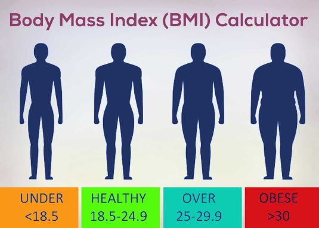

BMI Calculator
This straightforward BMI (Body Mass Index) Calculator is a practical tool designed for quick health assessment. It takes your name, weight (in pounds), and height (in inches) as inputs to calculate your BMI and provide immediate feedback on your health status.
Key Features:
Simplicity: The user interface is user-friendly, ensuring easy navigation for individuals from various backgrounds.
Personalized BMI: By inputting your data, the calculator generates your BMI, helping you understand your health on an individual level.
Immediate Results: The BMI is displayed clearly, giving you instant insights into your health status.
Health Assessment: Get feedback on whether you are underweight, normal weight, overweight, obese, severely obese, or morbidly obese based on your BMI.
Input Validation: The calculator verifies data input, ensuring reliable results.
Use this BMI calculator as a quick reference for your health status. It provides a no-nonsense assessment to help you gauge your well-being and make informed health decisions.